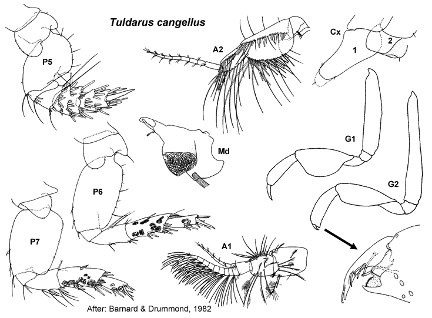

Tuldarus cangellus Barnard & Drummond, 1982: 119, figs 44–46 (part).
Type Material. Lodged in the NMV.
Type Locality. Western Port, Victoria, sand and mud , 16.5 m depth (CPBS 51N).
Description. Based on Barnard & Drummond, 1982: 119, figs 44–46 (part).
Antenna 1 peduncular article 1 setal row absent; accessory flagellum 7 -articulate; primary flagellum 7–9 -articulate. Antenna 2
peduncular article 4 main setal row with only robust setae, proximal
part of row evenly angled; peduncle article 5 not bulbous in male. Mandible right incisor simple; left incisor with 2 weak teeth. Maxilla 1 palp with apical group of setae only.
Gnathopod 1 simple; coxa small, triangular, slightly larger than coxa 2. Gnathopod 2 minutely parachelate to subchelate, propodus palm slightly obtuse to transverse. Pereopod 3 coxa large, slightly larger than coxa 4. Pereopod 4 coxa large, posteroventral lobe present. Pereopod 5 basis without mediofacial brush of setae; dactylus without robust setae. Male pereonite 6 smooth. Pereopod 6 basis moderately expanded, margins parallel; merus with few or no slender setae on posterior margin; dactylus well developed. Pereopod 7
coxa without long posterior spine; basis moderately expanded, posterior
margins tapering distally, with few slender setae along posteroproximal
margin; dactylus well developed.
Epimeron 2 subequal in size to epimeron 3, posteroventral corner with large spine, more setose than epimeron 3. Epimeron 3 posteroventral corner with large spine. Uropod 1 inner ramus shorter than outer ramus, weakly fused to peduncle. Uropod 2 inner ramus shorter than outer ramus, weakly fused to peduncle. Telson broader than long, entire.
Habitat. Sand and mud bottoms.
Distribution.Australia: Off the Hunter River, New South Wales to Western Port, Victoria (Barnard & Drummond, 1982).

___________________________
This
publication should be cited as: Kilgallen, N.M. & Lowry, J.K. 2008.
Urohaustoriidae (Amphipoda): World Genera and Species. Version 1. 1
January 2008. https://crustacea.net.